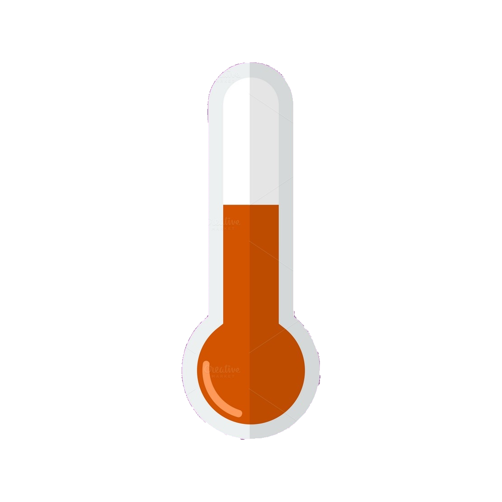

Temperature Converter
Here in this div we will have the links of the pages of emmet, javascript, html5, css3 and web-developer plugin.

Enter Temperature (examples: 32F, 45C, -2.5f):
Converted Temperature: